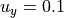
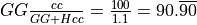

1. Simple shear of a 2D Cacuhy layer with Von-Mises elastoplastic strain hardening material¶
In this tutorial we will study a 2D Cauchy layer elasto-plastic layer with strain hardening under simple shear. In this tutorial we provide the basic structure of a script file in the framework of Numerical Geolab. Here we will study model formulation and analysis execution.
The file for this tutorial can be found in: ngeoFE_unittests.Mechanics.Cauchy.TwoD.BVP.Cauchy2D_Von_Mises
1.1. Begining of file¶
Before we start giving the necessary commands for the formulation of the model specific python modules need to be loaded. Below we provide a list of the modules needed and a brief explanation.
from dolfin import *
import time
import numpy as np
from ngeoFE.feproblem import UserFEproblem, General_FEproblem_properties
from ngeoFE.fedefinitions import FEformulation
from ngeoFE.materials import UserMaterial
from ngeoFE_unittests import ngeo_parameters
from ngeoFE_unittests import plotting_params
import os #allows easier manipulation of directories
from ngeoFE.feproblem we import the classes of UserFeproblem() and General_FEproblem_properties() that will transform our series of commands to a problem understood by dolfin
from ngeoFE.fedefinitions we import the class of FEformulation() that defines the vector of unknown derivatives to be used in the variational form solved by the dolfin package.
from ngeoFE.materials we import the UserMaterial() class where the material is specified.
from ngeoFE_unittests we import ngeo_parameters. This file contains the material library path and reference data that can be used to check the analysis results in the context of a unittest.
1.2. Finite Element Formulation¶
We do this by specifying the number of vector components for the test function, the interpolation function used inside the element and the number Gauss points present in the element for the integral evaluation of the weak form.
class Cauchy2DFEformulation(FEformulation):
'''
Defines a user FE formulation
'''
def __init__(self):
# Number of stress/deformation components
self.p_nstr=3
# Number of Gauss points
self.ns=1
def generalized_epsilon(self,v):
"""
Set user's generalized deformation vector
"""
gde=[
Dx(v[0],0), #gamma_11
Dx(v[1],1), #gamma_11
Dx(v[0],1)+Dx(v[1],0) #gamma_12
]
return as_vector(gde)
def create_element(self,cell):
"""
Set desired element
"""
# Defines a Lagrangian FE of degree 1 for the displacements
element_disp=VectorElement("Lagrange",cell,degree=1,dim=2)
return element_disp
 used for the equilibrium equations are needed.
We note also that we provide the Voigt notation for the unknown strains of the problem, therefore, the engineering strain notation for the shear strain needs to be used
used for the equilibrium equations are needed.
We note also that we provide the Voigt notation for the unknown strains of the problem, therefore, the engineering strain notation for the shear strain needs to be used  .
.In code snippet above, we provide the finite element formulation for the problem at hand. The class is initialized with 3 strain components and 1 Gauss point. The python function:
- generalized_epsilon(v)¶
- create_element(cell)¶
We note here that the VectorElelement() class indicates that the components of the function space for each vector component are the same.
1.3. Boundary identification¶
We proceed now by identifying the boundaries needed for the application of the boundary conditions at a later stage of the modeling procedure. We make use of the SubDomain() parent class inside dolfin:
- class SuDomain(x, on_boundary)¶
We create four subclasses (children) of the class, each for each side of the rectangular domain, which inherit from it the spatial variable (x) and the boundary identification flag (on_boundary) and the method
- inside(x, on_boundary)¶
The subclasses are defined as follows:
class left(SubDomain):
def inside(self,x,on_boundary):
return x[0] < 0 and on_boundary
class right(SubDomain):
def inside(self, x, on_boundary):
return x[0] > 0 and on_boundary
class top(SubDomain):
def inside(self,x,on_boundary):
return x[1] > 0 and on_boundary
class bottom(SubDomain):
def inside(self, x, on_boundary):
return x[1] < 0 and on_boundary
Inside each subclass we define the logical test for assigning the specific boundary node in one of the boundary regions, where the boundary conditions will be applied.
The value x[i] indicates the spatial coordinate  of the problem at hand.
of the problem at hand.
1.4. Finite element problem description¶
We proceed now with building the main Finite element model, corresponding to shearing in 2D of a Cauchy elastoplastic layer with a Von Mises yield criterion and strain hardening. The finite element model is built inside a child class that inherits its methods from the parentclass UserFEproblem(). We will provide here commentary for each method used inside the childclass Cauchy2DFEproblem(UserFEproblem).
class Cauchy2DFEproblem(UserFEproblem):
"""
Defines a user FE problem for given FE formulation
"""
def __init__(self,FEformulation):
self.description="Example of 2D plane strain problem, Cauchy continuum"
self.problem_step=0
self.h = 1.
self.w = 0.2
super().__init__(FEformulation)
In the class __init__() method, the finite element formulation defined above is provided as argument.The geometric dimensions of the problem are also specified Its height self.h=1. and its width self.w=0.2 . The initialization then proceeds to set up all the methods of the parentclass UserFEproblem(). The methods inside the class are defined by overriding the methods inside the parent class.
def set_general_properties(self):
"""
Set here all the parameters of the problem, except material properties
"""
self.genprops=General_FEproblem_properties()
# Number of state variables
self.genprops.p_nsvars=38
This method is used to provide the number of state variables of the material. In this tutorial only the mechanical behavior is important and therefore, the state of material is described by the increment of stress, total strain, elastic strain, plastic strain, plastic strain multiplier and plastic strain rate. Notice that even though the problem is in 2D and three strain components (and consequently three stress components) are needed for the description of equilibrium the state of the material contains the information also for the rest components of the general 3D problem. For each material used by the Numerical Geolab, the number of state variable components is given in material properties table.
For this simple geometry the capabilities of dolfin can be used to define a rectangular mesh specifying the bottom left and upper right corners of the rectangular domain.
def create_mesh(self):
"""
Set mesh and subdomains
"""
# Generate mesh
h=self.h
w=self.w
nx=80
ny=1
mesh = RectangleMesh(Point(-h/2.,-w/2.),Point(h/2.,w/2.),nx,ny,"left")#other options include "right". "crossed"
cd=MeshFunction("size_t", mesh, mesh.topology().dim())
fd=MeshFunction("size_t", mesh, mesh.topology().dim()-1)
return mesh,cd,fd
For the domain at hand we specify a discretization with nx=80 elements along the x[0] component and ny=1 element along the x[1] component. The MeshFunction() method of dolfin is used to provide the mesh object, the interior domain and the boundary domains. The following model is the produced:

Fig. 1.4.1 Image of the rectangular mesh produced by RectangleMesh(). The domain was exported with the help of the third party software Paravew.¶
We next assign values to the regions of the mesh defined by different material properties.
def create_subdomains(self,mesh):
"""
Create subdomains by marking regions
"""
subdomains = MeshFunction("size_t", mesh, mesh.topology().dim())
subdomains.set_all(0) #assigns material/props number 0 everywhere
return subdomains
In this tutorial all the domain is defined by the same material properties and therfore the value 0 will be assigned everywhere inside the mesh. This value is a number indicating which material parameters need to be taken into account in each mesh region (see the corresponding method set_material_params()).
We do so by assigning the numbers 1 to 4 to the different regions of the model. To do this we use the method mark() from the SubDomain() class of dolfin.
def mark_boundaries(self,boundaries):
"""
Mark left and right boundary points
"""
boundaries.set_all(0)
left0=left()
left0.mark(boundaries,1)
right0=right()
right0.mark(boundaries,2)
top0=top()
top0.mark(boundaries,3)
bottom0=bottom()
bottom0.mark(boundaries,4)
return
1.4.1. Assigning boundary conditions¶
We are now able to identify the boundaries of the mesh and assign different boundary condition to each side of the boundary. The way we apply the boundary conditions can be seen in the method:
- set_bcs()¶
def set_bcs(self):
"""
Set boundary conditions for the user problem / could be replaced by external mesher, e.g. Abaqus, Gmsh...
"""
bcs=[
[2,[0, [1],0.1]],
[1,[0, [1],0]],
[4,[0, [0],0]],
[3,[0, [0],0]]
]
return bcs
Inside this method the boundaries are assigned with the use of a nested list. Dirichlet, Neuman and Robin boundary conditions can be applied both incrementaly and instantaneously. The boundary conditions can be assigned to a boundary region or pointwise.
In this example, the region id ranges from 1 to 4 indicating the left, right,top and bottom regions of the boundaries. The type of bc is set to 0, specifying incremental Dirichlet boundary conditions. The vector component shows which component of the 2D displacement vector is to be affected and value indicates the value of the boundary condition to be set at the specific boundary.
1.4.2. Assigning the nodal history output¶
Numerical Geolab offers the user the capability of extracting the output at the nodes and regions of the boundary at the converged increments of the numerical analysis. This capability is given to the user in order to obtain the specific nodal output of the solution (forces, displacements) instead of using the interpolated results provided in a separate .vtk file for postprocessing with a third party software (e.g. Paraview). The history output at the nodes can be given by:
def history_output(self):
"""
Used to get output of residual at selected node
"""
hist=[[2,[1,[1]]],
[2,[0,[1]]],
]
return hist
The node specification works the same way as in set_bcs(). In this example we choose the right edge of the boundary (2) in order to monitor the second component ([1]) of the force (1) and displacement (0) fields respectively.
1.5. Material specification¶
Next, we define the analysis material that we have already assigned in the create_subdomains() method.
def set_materials(self):
"""
Create material objects and set material parameters
"""
mats=[]
# load material #1
env_lib=ngeo_parameters.env_lib
umat_lib_path= ngeo_parameters.umat_lib_path
umat_lib = umat_lib_path+'/CAUCHY3D-DP/libplast_Cauchy3D-DP.so'
umat_id=2 # if many materials exist in the same library
mat=UserMaterial(env_lib,umat_lib,umat_id)
mat.props=self.set_material_1_properties(2000.,0.,100.,1.)
#
mats.append(mat)
return mats
The ngeo_parameters.py module contains the relative path to the materials libraries, which specify the different materials available to the user.
The variable umat_id=2 needs to be set for the 2D analyses performed here. It specifies the mapping of the updated vector components of the strain increment
and corresponding tensor components of the constitutive matrix, with their position in the 3D strain vector and 3D constitutive matrix provided at the material subroutine (material algorithm).
This mapping returns back the correct components of the stress vector and constitutive matrix to pass into the residual calculation of the weak form in dolfin (equilibrium iterations). The material properties passed into the material algorithm, are set with the helper method:
def set_material_1_properties(self,EE,nu,cc,H):
"""
Sets material parameters
"""
GG=EE/(2.*(1.+nu))
KK=EE*GG/(3.*(3.*GG-EE))
props=np.zeros(19)
props[1-1]=KK
props[2-1]=GG
props[12-1]=cc
props[15-1]=H
props[19-1]=0.
props=props.astype("double")
return props
In this example we chose to provide the material young modulus EE, Poisson ratio nu, the material yield strength in simple shear cc and the isotropic hardening parameter during yield equal to H=1. The parameters passed into the material subroutine are the 3D isotropic compression modulus KK and the shear modulus GG. Therefore, a transformation of the elastic constants is needed. The elastic constants (GG, KK) used together with the material hardening parameter, H, and their position in the material properties (numpy array props), can be found in Table (reference needed) and the material library files that accompany Numerical Geolab.
1.6. Analysis excecution¶
Our model is now set and ready to run. In order to perform an analysis for the problem at hand, we can simply type:
my_FEformulation=Cauchy2DFEformulation()
my_FEproblem=Cauchy2DFEproblem(my_FEformulation)
path1='../reference_data'
filename = 'Cauchy_2D_Von_Mises_test_step_0'
saveto=os.path.join(path1,filename+'.xdmf')
converged=my_FEproblem.solve(saveto,summary=True)
This will use the solve method inside the parent UserFeproblem() class that starts the solution procedure. The analysis results are the saved to an ‘.xdmf’ file to be postprocessed by a third party application (e.g. Paraview).
1.7. Control of the solution procedure¶
The FEproblem() class of Numerical Geolab allows for gret flexibility in choosing the solver parameters with which an analysis can be performed. Below a set of parameters can be passed as attributes to the solver for controling the frequency of writing output (my_FEproblem.slv.incmodulo), the tolerance (my_FEproblem.slv.convergence_tol), the maximum increment size (my_FEproblem.slv.dtmax), the maximum analysis time (my_FEproblem.slv.tmax) and the maximum number of increments (my_FEproblem.slv.nincmax=1000000).
my_FEproblem.slv.incmodulo = 1
my_FEproblem.slv.convergence_tol=10**-6
my_FEproblem.slv.dtmax=0.1
my_FEproblem.slv.tmax=1.
my_FEproblem.slv.nincmax=1000000
1.8. Analysis results¶
For this simple example we are able to evaluate analyticaly the shear stress, shear strain and the slope of the post yielding branch during the analysis. More specifically form the properties of the above material parameters we have that the yield stress at pure shear is given by cc=100 kPa and the elastic shear modulus is equal to G=1000 kPa. This specifies the shear displacement value during yield at  mm. The elastoplastic hardening modulus during yielding of the layer is then given by the analytical relation, GH= .
- history_output()¶
def list_unpack(list1):
list_time=[0.0]
list_force=[]
list_disp=[np.array([0., 0.])]
for elem in list1:
list_time.append(elem[0])
list_force.append(elem[1])
list_disp.append(elem[2])
return list_time, list_force, list_disp
analysis_history=my_FEproblem.feobj.problem_history
analysis_history_flat=[elem1 for elem in analysis_history for elem1 in elem]
list_time, list_force, list_disp = list_unpack(analysis_history_flat)
array_time=np.array(list_time[:-1])
array_force=np.array(list_force[:-1]).sum(axis=1)/0.2
array_disp=np.array(list_disp[:-1])
To obtain the total shear stress on the free end of the layer we add together the nodal forces and divide by the length of the free side, w=0.2. We can then plot the diagram of stress vs displacement at the free end of the layer. Since a homogeneous deformation problem was studied, this diagram is indicative of the shear sress, shear strain behavior inside the layer.
fig, ax = plotting_params.object_plot_axes('$u$ [mm]', '$\sigma$ [kPa]', '')
plotting_params.object_plot(array_disp, -array_force, ax, '')
plotting_params.plot_legends('./reference_data/', fig, ax,legend_title=' ', filename='Cauchy_2D_elastoplastic',mode='1')
Fig. 1.8.1 Shear stress displacement diagram at the free end of the layer.¶ |
Fig. 1.8.2 2D Cauchy layer under uniform shear (image produced with the help of third party software Paraview).¶ |
{kind=link}
{kind=link}